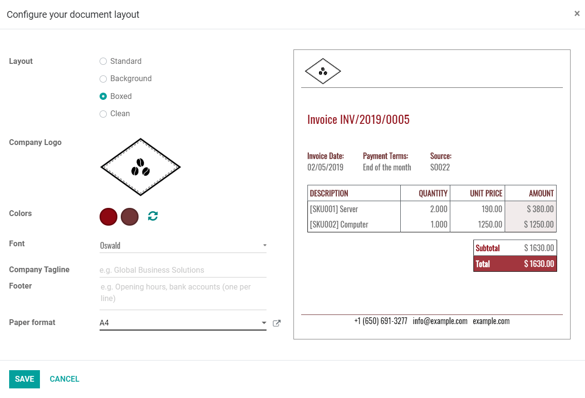

Información básica¶
Cuando abre por primera vez su aplicación Contabilidad, la página Información general de contabilidad le da la bienvenida con un panel de integración paso a paso, un asistente que le ayuda a empezar. Este panel de integración se muestra hasta que decide cerrarlo.
Los ajustes visibles en el panel de integración podrán modificarse más tarde en .
Nota
La aplicación Contabilidad instala de manera automática el paquete de localización fiscal correspondiente a su empresa dependiendo del país que se seleccionó en la base de datos. Las cuentas, los reportes y los impuestos correctos estarán disponibles de inmediato. Haga clic aquí para aprender más sobre los paquetes de localización fiscal.
Panel de integración de Contabilidad¶
El panel de integración de Contabilidad se compone de cuatro pasos:

Datos de la empresa¶
Este menú le permite agregar los detalles de su empresa como el nombre, dirección, logo, sitio web, teléfono, correo electrónico y NIF. Estos detalles se muestran en sus documentos, como las facturas.

Nota
También puede cambiar estos ajustes en al hacer clic en Actualizar información.
Cuenta bancaria¶
Conecte su cuenta bancaria a su base de datos y sincronice automáticamente sus estados de cuenta bancarios. Para hacerlo, busque su banco en la lista, haga clic en Conectar, y siga las instrucciones.
Nota
Haga clic aquí para obtener más información sobre esta función.
Si su institución bancaria no se puede sincronizar automáticamente, o si prefiere no sincronizarla con su base de datos, también puede configurar su cuenta bancaria de forma manual al hacer clic en Crearla y completar el formulario.
Nombre: el nombre de la cuenta bancaria, tal como se muestra en Odoo.
Número de cuenta: su número de cuenta bancaria (IBAN en Europa).
Banco: haga clic en Crear y editar para configurar los detalles del banco. Añada el nombre de la entidad y su identificador (BIC o SWIFT).
Código: este código es el código corto del diario, tal como se muestra en Odoo. Automáticamente Odoo crea un nuevo diario con este código corto.
Diario: Este campo se muestra si tiene un diario bancario existente que todavía no esté vinculado a una cuenta bancaria. Si es así, seleccione el «Diario» que quiera usar para registrar las transacciones financieras de esta cuenta bancaria o cree uno nuevo haciendo clic en Crear y editar.
Nota
Con esta herramienta puede agregar tantas cuentas como necesite en , al hacer clic en Agregar una cuenta bancaria.
Haga clic aquí para obtener más información sobre las cuentas bancarias.
Periodos contables¶
Defina aquí las fechas de apertura y cierre de sus años fiscales que se usan para generar reportes automáticamente y la periodicidad de declaración de impuestos, junto con un recordatorio para no olvidar las fechas límite de declaración.
De forma predeterminada, la fecha de apertura se establece en el 1 de enero y la de cierre en el 31 de diciembre, ya que es el uso más común.
Nota
También puede cambiar estos ajustes en y modificando los valores.
Plan de cuentas¶
Con este menú, puede agregar cuentas al plan de cuentas e indicar sus balances iniciales.
En esta página se muestran los ajustes básicos para ayudarle a revisar su plan de cuentas. Para acceder a todos los ajustes de una cuenta, haga clic en el botón de doble flecha al final de la línea.

Nota
Haga clic aquí para obtener más información sobre cómo configurar su plan de cuentas.
Datos de la empresa¶
Este formulario es el mismo que el que se presenta en el panel de integración de Contabilidad.
Diseño de factura¶
Con esta herramienta, puede diseñar la apariencia de sus documentos al seleccionar qué plantilla de diseño, formato de papel, colores, fuentes y logo quiere usar.
También puede añadir el lema de su empresa y el contenido del pie de página. Tome en cuenta que Odoo agrega automáticamente el teléfono de la empresa, correo electrónico, URL del sitio web y número de identificación fiscal al pie de página, de acuerdo con los valores que usted haya configurado en la Información de la empresa.
Truco
Añada su número de cuenta bancaria y un enlace a sus términos y condiciones generales en el pie de página. De esta manera, sus contactos pueden encontrar en línea el contenido completo de sus condiciones sin necesidad de imprimirlas en todas las facturas que emita.
Nota
Estos ajustes también se pueden modificar en , en la sección Documentos empresariales.
Método de pago¶
Este menú ayuda a configurar los métodos de pago con los que los clientes pueden pagar.
Importante
Configurar un proveedor de pago con esta herramienta también activa la opción Pago electrónico de factura de forma automática. Con esto, los usuarios pueden pagar en línea directamente desde su portal de cliente.
Factura de muestra¶
Envíese una factura a sí mismo para asegurarse de que todo está configurado correctamente.
Ver también